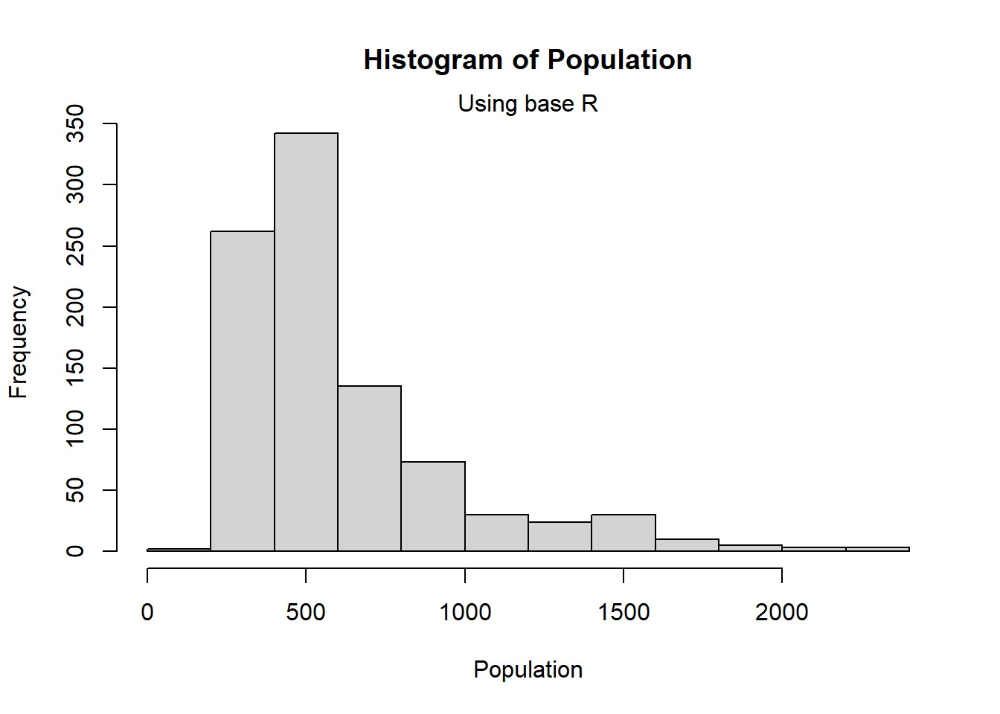
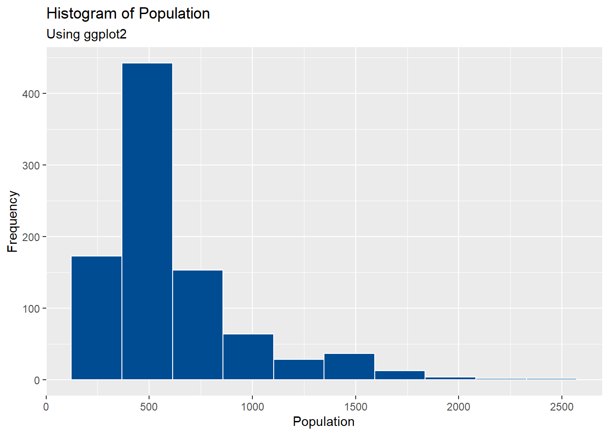
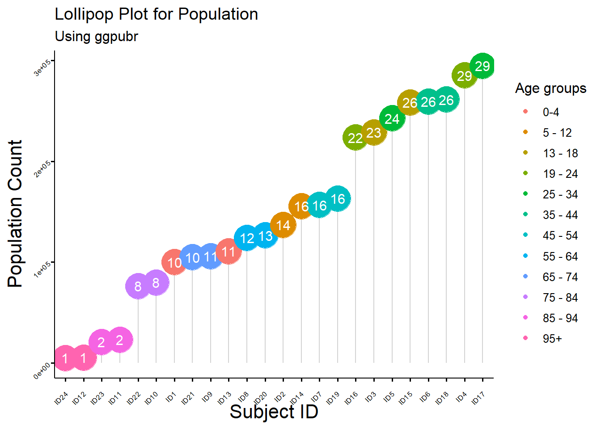
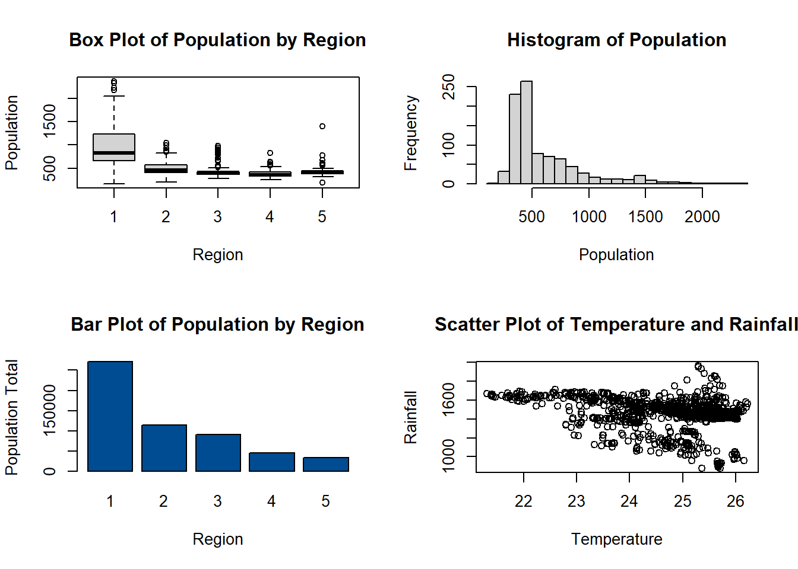
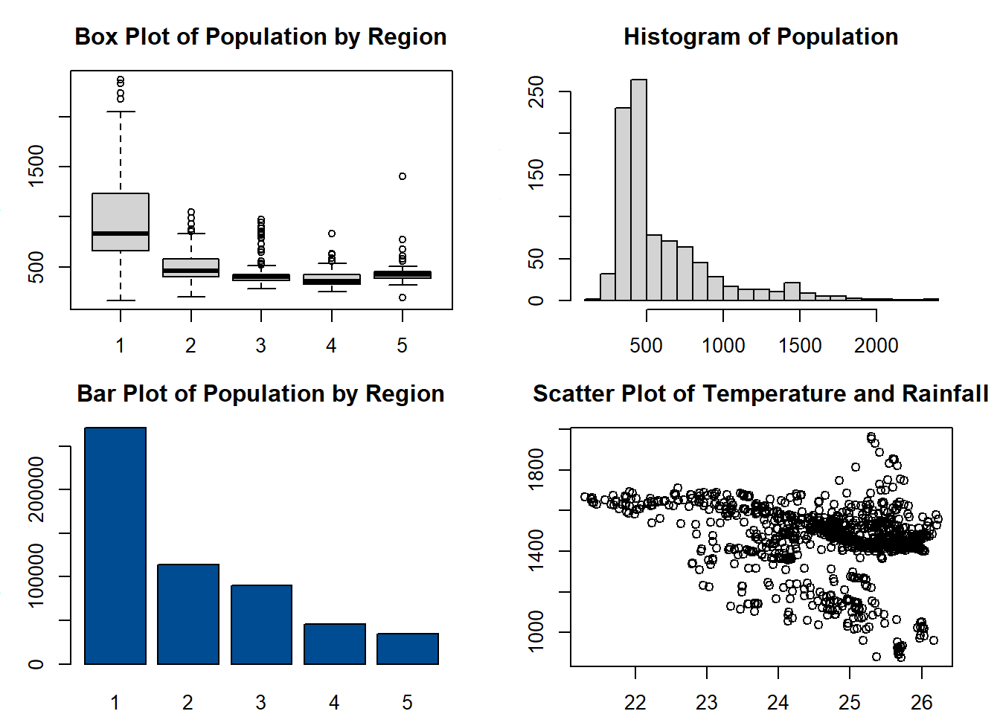

2 Working with Data Frames
This module focuses on working with data frames, covering the installation and loading of data into the R environment, and basic data wrangling methods. Also included in Module 2 is a thorough introduction into data visualisation methods, key foundational knowledge that will be utilised in future modules.
2.1 Importing and exporting data in and from R
2.1.1 Installing and loading packages
R uses packages (libraries) to store different functions, and has thousands (16,000) of these packages. The “official” packages for R can be found on CRAN, but there are many other useful packages available on GitHub.
Packages are a collection of R functions, code, and occasionally data that enables efficient work in R without the need to write complicated code.
Examples of common R packages include:
- tidyverse: a collection of R packages designed for data manipulation and visualisation, including the following packages
- ggplot2: designed for elegant data visualisation and graphics
- dplyr: designed for data manipulation and cleaning
- tidyr: designed for reshaping and cleaning data
- readr: designed for reading and writing delimited files
- purrr: designed for functional programming in R
- tibble: designed to be a modern reimplementation of data frames
- stringr: designed for working with strings
- lubridate: designed for working with dates and times
- forcats: designed for working with categorical variables
- sf: designed for working with spatial vector data
- rstan or INLA: designed for use with Bayesian statistics
To utilise the packages in R, it is required to install and load the packages into the session. Some packages are already installed and loaded as part of the base R package, however, for those which are not the functions install.packages() can be used to install packages, ensuring that the name of any packages included are enclosed by either ' or " and library() can be used to load the package from the library.
Alternatively, available packages can be accessed from the “Packages” window in Pane 3 (bottom-right pane) of the RStudio GUI. In this window, you can either search for the package directly, or scroll through the list and check the tick box of the desired package to load it into R.
2.1.2 Reading data into the R environment
Different data formats require different functions in R for importation into R, with some formats requiring additional packages to allow installation. From base R, the function read.table() reads the chosen .txt file included as an argument. However, this function does not ‘read’ the file into the R environment, only prints the file in the console. To import the file into the R environment, you must assign the results to a variable. The other key functions for importing data into R are given in the table below with example code on how to use the functions provided also.
| Data type | Function | Package required |
|---|---|---|
.csv |
read.csv() |
none (in base) |
.txt, text files |
read.table() |
none (in base) |
.xslx, excel
workbook |
read.excel() |
readxl |
.dta, STATA
files |
read.dta() |
foreign |
.sav, SPSS
files |
read.spss() |
foreign |
#import a text or .txt file
text_data<-read.table(file = paste0(data_path,"sample_data.txt"))
#import a .csv file
csv_data1 <-read.table(file = paste0(data_path,"sample_data.csv"),
sep = ",",
header = TRUE)
csv_data2 <-read.csv(file = paste0(data_path,"sample_data.csv"))
#import an Excel Workbook file
install.packages("readxl")
library(readxl)
excel_data<-read_excel(file = paste0(data_path,"sample_data.xlsx"))
#import a STATA file
install.packages("foreign")
library(foreign)
stata_data<-read.dta(file = paste0(data_path,"sample_data.dta"))Alternatively to pasting the data path, the function file.choose() can be used, which opens a window on the computer for you to select the file you wish to import.
Another option for loading data in R is to use the menus in the main toolbar following File > Import Dataset > From [data format of choice] > [browse for file on the pop-up window] or in the Environment pane following Import Dataset > From [data format of choice] > [browse for file on the pop-up window]. Both menus are shown in Figures 1 and 2 respectively. This practice is not encouraged however, given that it is not hard-coded in the script, it is better practice to use the functions above in the script to import your chosen dataset.

Figure 2.1: Import table via Toolbar

Figure 2.2: Import data via Environment
Exercise: What are the defaults for the header argument in the functions read.table() and read.csv()?
header = Tinread.table()andheader = Tinread.csv()header = Tinread.table()andheader = Finread.csv()header = Finread.table()andheader = Tinread.csv()header = Finread.table()andheader = Finread.csv()
2.1.3 Creating work paths
Setting the working directory to a single folder means that R can only access files within that folder and cannot open any folders within a folder.
If you have several folders within a folder that need accessing, or need your input and output files and immediate and final results stored in different folders. In these instances, rather than setting a working directory it can be better to store the path to folder as a string, setting a ‘parent directory’. Then use the function read.table() to import the data, which can read both standard .txt and .csv data
setting a work path allows for you to set a ‘parent directory’ which solves this problem.
This can be created through setting a path to the parent directory.
#parent directory
path <- "C:Users/YOUR_NAME"
#save in a folder called "training"
out_path <- paste0(path, "/training")
if(!file.exists(out_path))
{
dir.create(file.path(out_path))
}You can also create a work path using the current working directory as the parent directory.
#working directory as parent directory
out_path <- paste0(getwd(), "/training")
if(!file.exists(out_path))
{
dir.create(file.path(out_path))
}You can set your parent directory to be your working directory as follows.
2.1.4 Exploring data attributes
| Function | Description |
|---|---|
class() |
class of the variable |
colnames() |
gives the column names |
describe() |
summary of data -
requires psych
package |
dim() |
gives dimensions of the data |
factor() |
change to a factor |
glimpse() |
view data structure |
head() |
gives first six (6) rows of data |
head(mydata, n) |
gives first n
(6) rows of data
called mydata |
headtail() |
first and last
rows of data -
requires psych
package |
length() |
length of a vector |
ls() |
lists all items available in the R environment |
names() |
gives column or variable names |
ncol() |
number of columns |
nrow() |
number of rows |
row() |
gives the row names |
rm() |
removes selected items from the R environment |
str() |
gives full structure of data |
summary() |
summary of a vector |
table() |
frequency table of a vector |
tail() |
gives last six (6) rows of data |
unique() |
unique values of a vector |
View() |
view data |
#'mtcars' is a dataset available in the 'datasets' package with data on
#11 different aspects of auto mobiles for 32 auto mobiles from the 1974 Motor
#Trend US magazine
library(datasets)
#information on the dataset in the 'Help' pane
?mtcars
#load data and assign to 'cars_data'
cars_data <- mtcars
#dimension of data
dim(cars_data)## [1] 32 11## [1] "mpg" "cyl" "disp" "hp" "drat" "wt" "qsec" "vs" "am" "gear" "carb"## mpg cyl disp hp drat wt qsec vs am gear carb
## Mazda RX4 21.0 6 160 110 3.90 2.620 16.46 0 1 4 4
## Mazda RX4 Wag 21.0 6 160 110 3.90 2.875 17.02 0 1 4 4
## Datsun 710 22.8 4 108 93 3.85 2.320 18.61 1 1 4 1
## Hornet 4 Drive 21.4 6 258 110 3.08 3.215 19.44 1 0 3 1
## Hornet Sportabout 18.7 8 360 175 3.15 3.440 17.02 0 0 3 2
## Valiant 18.1 6 225 105 2.76 3.460 20.22 1 0 3 1## mpg cyl disp hp drat wt qsec vs am gear carb
## Porsche 914-2 26.0 4 120.3 91 4.43 2.140 16.7 0 1 5 2
## Lotus Europa 30.4 4 95.1 113 3.77 1.513 16.9 1 1 5 2
## Ford Pantera L 15.8 8 351.0 264 4.22 3.170 14.5 0 1 5 4
## Ferrari Dino 19.7 6 145.0 175 3.62 2.770 15.5 0 1 5 6
## Maserati Bora 15.0 8 301.0 335 3.54 3.570 14.6 0 1 5 8
## Volvo 142E 21.4 4 121.0 109 4.11 2.780 18.6 1 1 4 2## vars n mean sd median trimmed mad min max range skew kurtosis se
## mpg 1 32 20.09 6.03 19.20 19.70 5.41 10.40 33.90 23.50 0.61 -0.37 1.07
## cyl 2 32 6.19 1.79 6.00 6.23 2.97 4.00 8.00 4.00 -0.17 -1.76 0.32
## disp 3 32 230.72 123.94 196.30 222.52 140.48 71.10 472.00 400.90 0.38 -1.21 21.91
## hp 4 32 146.69 68.56 123.00 141.19 77.10 52.00 335.00 283.00 0.73 -0.14 12.12
## drat 5 32 3.60 0.53 3.70 3.58 0.70 2.76 4.93 2.17 0.27 -0.71 0.09
## wt 6 32 3.22 0.98 3.33 3.15 0.77 1.51 5.42 3.91 0.42 -0.02 0.17
## qsec 7 32 17.85 1.79 17.71 17.83 1.42 14.50 22.90 8.40 0.37 0.34 0.32
## vs 8 32 0.44 0.50 0.00 0.42 0.00 0.00 1.00 1.00 0.24 -2.00 0.09
## am 9 32 0.41 0.50 0.00 0.38 0.00 0.00 1.00 1.00 0.36 -1.92 0.09
## gear 10 32 3.69 0.74 4.00 3.62 1.48 3.00 5.00 2.00 0.53 -1.07 0.13
## carb 11 32 2.81 1.62 2.00 2.65 1.48 1.00 8.00 7.00 1.05 1.26 0.292.1.5 Viewing data
Data imported into R can be viewed in the Environment pane, with the column/variable names given, the data type of each variable and the first 10 observations (provided the observations do not go ‘off’ the display due to length) for each variable given as a summary of the data structure. If the summary is not given, ensure that the display of the Environment is set to ‘list’ and click the arrow to the left of the dataset name.

Figure 2.3: View data in Environment
Alternatively, the function View() can be used to display the full data in a new tab in the first (1st) pane, adjacent to the script.

Figure 2.4: View data in new tab
2.1.6 Extracting data
As with the different data structures in R such as vectors and data frames, data can be extracted from a dataset using square brackets, [], known as sub-setting or slicing. Additionally, the dollar sign, $ can be used to extract variables/access columns from a dataset.
## mpg cyl disp hp drat wt qsec vs am gear carb
## Fiat 128 32.4 4 78.7 66 4.08 2.200 19.47 1 1 4 1
## Honda Civic 30.4 4 75.7 52 4.93 1.615 18.52 1 1 4 2
## Toyota Corolla 33.9 4 71.1 65 4.22 1.835 19.90 1 1 4 1
## Fiat X1-9 27.3 4 79.0 66 4.08 1.935 18.90 1 1 4 1
## Porsche 914-2 26.0 4 120.3 91 4.43 2.140 16.70 0 1 5 2
## Lotus Europa 30.4 4 95.1 113 3.77 1.513 16.90 1 1 5 2Data can also be sliced by a given index using a colon, :, to represent a given range.
## mpg cyl disp hp drat wt qsec vs am gear carb
## Hornet Sportabout 18.7 8 360.0 175 3.15 3.44 17.02 0 0 3 2
## Valiant 18.1 6 225.0 105 2.76 3.46 20.22 1 0 3 1
## Duster 360 14.3 8 360.0 245 3.21 3.57 15.84 0 0 3 4
## Merc 240D 24.4 4 146.7 62 3.69 3.19 20.00 1 0 4 2
## Merc 230 22.8 4 140.8 95 3.92 3.15 22.90 1 0 4 2
## Merc 280 19.2 6 167.6 123 3.92 3.44 18.30 1 0 4 4Through extracting variables from the datasets, the summary statistic functions for vectors can be used.
## 0% 25% 50% 75% 100%
## 52.0 96.5 123.0 180.0 335.0## [1] 6The dollar sign doesn’t just extract variables from the data, but can be used to create new variables as with data frames.
2.1.7 Attaching data
When working with variables from one dataset in R, it can become tedious to always require the dollar sign, $, to access the variables. The function attach() in R stops the need for this through essentially copying each of the variables from the dataset into the Environment to be used freely, without needing to quote the dataset each time.
## Error: object 'mpg' not found## [1] 20.09062## [1] 20.09062If you want to detach the data for any reason, for example if you want to attach another dataset, you can use the detach() function in R.
## Error: object 'mpg' not found2.1.8 Writing data to external repositories
Different data formats require different functions in R for exporting from R, with some formats requiring additional packages to allow for exportation. Since the data visible in the Environment (pane 4) is stored in the RAM, and not in the physical memory, it is important that any data you wish to save is written to an external repository, such as writing the data to a .csv file, otherwise it is erased when the R session ends. The key functions used to write the data as the different (common) data types are given in the table below with examples in the code that follows.
| Data type | Function | Package required |
|---|---|---|
.csv |
write.csv() |
none (in base) |
.txt, text files |
write.table() |
none (in base) |
.xslx, excel
workbook |
write.xlsx() |
writexl |
.dta, STATA
files |
write.dta() |
foreign |
#export a .csv file
write.csv(sample_data, "exported_data.csv")
#export a text or .txt file
write.table(sample_data, "exported_data.txt")
#export an Excel file
install.packages("writexl")
library(writexl)
write_xlsx(sample_data, "exported_data.xlsx")
#export a STATA file
install.packages("foreign")
library(foreign)
write.dta(sample_data, "exported_data.dta")Note: The entire R Environment can be saved using the save.image() function or by clicking on the “save icon” (floppy disk icon) on the toolbar of the Environment window (pane 4) and selecting where you wish to save the .Rdata in the pop-up window.
2.2 Basic data wrangling methods for data preparation and handling in R
2.2.1 Dealing with NA (‘Not Available’) values
NA is typically used to represent for missing (‘Not Available’) values in R, and is an important concept, particularly as R replaces missing values with NA (and replaces impossible values, such as when dividing by zero, with NaN).
#import population data
Pop_data <- read.csv(file = paste0(data_path, "sim_population.csv"),
header = TRUE)
#variable for gdp contains missing values, first 50 values
Pop_data$gdp[1:50]## [1] 8 6 2 2 10 2 10 7 9 9 3 9 9 8 3 12 NA 2 6 3 NA 4 NA 8 8 1 9 14 6 15 7 10 2 8
## [35] 2 14 5 6 7 12 12 1 3 4 15 4 3 13 7 8#trying to sum the elements of the variable does not work as R cannot deal with
#the missing value
sum(Pop_data$gdp)## [1] NAIf there is missing data in the variable/vector that you are trying to work with, the function na.rm = TRUE can be applied, which removes the missing data from the variable/vector you are working with.
## [1] 10831To identify which elements are missing from an R object, the function is.na() can be used, where the argument is chosen to be the object of interest. If you would like to know how many missing values there are, you can use the sum() function in addition to the is.na() function as shown below.
## [1] FALSE FALSE FALSE FALSE FALSE FALSE FALSE FALSE FALSE FALSE FALSE FALSE FALSE FALSE FALSE FALSE TRUE
## [18] FALSE FALSE FALSE TRUE FALSE TRUE FALSE FALSE FALSE FALSE FALSE FALSE FALSE FALSE FALSE FALSE FALSE
## [35] FALSE FALSE FALSE FALSE FALSE FALSE FALSE FALSE FALSE FALSE FALSE FALSE FALSE FALSE FALSE FALSE## [1] 3Alternatively, if you would like to know which of the values are complete (not missing), the function complete.cases() can be used in the same way, but returns a logical vector indicating which of the elements which are complete.
#identify the missing values in the gdp variable (first 50 values)
complete.cases(Pop_data$gdp[1:50])## [1] TRUE TRUE TRUE TRUE TRUE TRUE TRUE TRUE TRUE TRUE TRUE TRUE TRUE TRUE TRUE TRUE FALSE
## [18] TRUE TRUE TRUE FALSE TRUE FALSE TRUE TRUE TRUE TRUE TRUE TRUE TRUE TRUE TRUE TRUE TRUE
## [35] TRUE TRUE TRUE TRUE TRUE TRUE TRUE TRUE TRUE TRUE TRUE TRUE TRUE TRUE TRUE TRUE## [1] 47Another useful function is the na.omit() function, which instead of returning a logical vector identifying which values are complete or missing, it returns the object with the missing values removed.
## [1] 8 6 2 2 10 2 10 7 9 9 3 9 9 8 3 12 2 6 3 4 8 8 1 9 14 6 15 7 10 2 8 2 14 5
## [35] 6 7 12 12 1 3 4 15 4 3 13 7 8
## attr(,"na.action")
## [1] 17 21 23
## attr(,"class")
## [1] "omit"To quickly identify if there are missing values in your data frame/object, the na.fail() function can be used. With this function, if the object included as the argument contains any missing values, it will signal an error, however, if there are no missing values, the object is returned.
#check for missing values
#na.fail(Pop_data$gdp[1:50]) #returns an error
na.fail(gdp_na_omit) #returns an error## [1] 8 6 2 2 10 2 10 7 9 9 3 9 9 8 3 12 2 6 3 4 8 8 1 9 14 6 15 7 10 2 8 2 14 5
## [35] 6 7 12 12 1 3 4 15 4 3 13 7 8
## attr(,"na.action")
## [1] 17 21 23
## attr(,"class")
## [1] "omit"2.2.2 Key data wrangling methods
Some key data manipulation can be done using the following functions in base, stats, dplyr and tidyr packages.
| Function | Description | Package |
|---|---|---|
aggregate() |
obtain summary statistics by group | stats |
arrange() |
duplicate existing variable in the data with new name | dplyr |
drop_na() |
remove all columns with NA | tidyr |
filter() |
Select rows based on certain conditions | dplyr |
gather() |
convert to long format | tidyr |
group_by() |
group the rows of a data frame by one or more variables | dplyr |
merge() |
join two datasets | base |
mutate() |
add new columns to a data frame based on existing columns | dplyr |
select() |
choose specific columns to work with | dplyr |
spread() |
convert to wide format | tidyr |
subset() |
subset data by given specifications | base |
summarise()/
summarize() |
compute summary
statistics for
each group created
by group_by() |
dplyr |
rename() |
change the names of columns in a data frame | dplyr |
The pipe operator, %>%, from the magritr package allows for a sequence of operations to be carried out simultaneously. R offers a built in native pipe, |>, which works in a similar way and can be faster for longer computations. The main difference between the functions is that %>% does not require parentheses (brackets) when calling functions, whereas for |>, the parentheses are always necessary. The with() function in base R performs similar actions.
## ID pop precipitation_mean temperature_mean elevation slope region buildings gdp
## 1 1 164 1581.950 24.00823 650.27273 0.9090909 1 250 8
## 2 2 192 1628.924 25.07551 364.75000 1.5000000 5 374 6
## 3 3 203 1072.788 25.11997 107.63636 3.5454545 2 418 2
## 4 4 206 1219.166 25.29793 340.75000 1.5000000 2 327 2
## 5 5 226 1117.308 25.17577 90.68421 6.5263158 2 443 10
## 6 6 229 1401.864 25.61566 305.71429 7.2857143 1 503 2Subset rows based on certain conditions.
#subset observations with a population of more than 10 million people
Pop_data %>% filter(pop>=2000)## ID pop precipitation_mean temperature_mean elevation slope region buildings gdp
## 1 914 2008 1432.101 25.85989 300.5000 1.3750000 1 3061 NA
## 2 915 2047 1469.931 25.95289 292.1111 0.4444444 1 3897 73
## 3 916 2174 1437.897 25.88929 307.3333 1.1111111 1 4440 48
## 4 917 2233 1425.850 25.84749 317.0000 2.0000000 1 4766 22
## 5 918 2329 1420.629 25.82820 308.8750 2.3750000 1 5294 NA
## 6 919 2369 1425.794 25.84525 308.5833 1.3333333 1 4923 NASelect certain variables.
## region pop
## 1 1 164
## 2 5 192
## 3 2 203
## 4 2 206
## 5 2 226
## 6 1 229Group observations by variable and summarise by property.
#group the observations by region and summarise their population per region
Pop_data%>%
group_by(region) %>%
summarise(regional_population = sum(pop))## # A tibble: 5 × 2
## region regional_population
## <int> <int>
## 1 1 270962
## 2 2 113832
## 3 3 90361
## 4 4 45677
## 5 5 34583Adding another variable.
#add another variable called density = total/buildings
Pop_data <- Pop_data %>%
mutate(density = pop/buildings)Renaming variables.
Sort data into ascending or descending order.
2.3 Data visualisation
Data visualisation is important as it forms part of the exploratory data analyses, enabling a quick and easy understanding of the dataset. It also enables for patterns to be detected and can be a useful tool for communicating results to non-experts. Data visualisation is also crucial to data exploration.
For using base R data visualisation functions, with functions such as plot(), boxplot(), and hist(), the following arguments are useful for customisation of the plots, often making the plots easier to understand.
| Argument | Description |
|---|---|
main |
an overall title |
xlab |
a title for the \(x\)-axis |
ylab |
a title for the \(y\)-axis |
sub |
a sub-title |
type |
determines the
type of plot
e.g. “p” for
points, “l” for
lines |
pch |
determines type of symbol to be used for points |
col |
colour of plot |
lty |
determines the
type of line e.g.
“1” for solid,
“2” for dashed |
lwd |
determines width of the line |
Further arguments for graphical parameters can be found by going to the help file for par (?par).
The ggplot2 and ggpubr packages can be used instead of base R to create more elegant plots.
2.3.1 Bar plots
A bar plot can be useful for discrete data.
#create a vector which has the values of total population by region
regional_population <- c()
for(r in 1:5){
regional_population[r] <- sum(Pop_data$pop[Pop_data$region == r])
}
#plot the bar plot using base R
barplot(regional_population,
ylab = "Population Total",
xlab = "Region",
col = "#004C92",
main = "Bar Plot of Population by Region",
names.arg = c(1:5))
mtext(side = 3, "Using base R")
Using the function ggplot() with the argument geom_bar() creates a bar plot. The following example is the same plot as above, but with the depicted information easier to understand.
#bar plot of population by region
barplot1 <- ggplot(Pop_data, aes(x = region, y = pop, fill = pop)) +
geom_bar(stat = "identity") +
scale_fill_gradient(low = "yellow", high = "red") +
labs(x = "States", y = "Population Total", fill = "Total", subtitle = "Using ggplot2") +
ggtitle("Bar Plot of Population by Region")
#use the ggpar function to customise plot
ggpar(barplot1, xlab = "Region", ylab = "Population Total",
legend = "right", legend.title = "Total",
font.x = c(16),
font.y = c(16),
subtitle = "Using ggplot2 and ggpubr")
#import the age dataset
Age_data <- read.csv(file = paste0(data_path, "Age_data.csv"), header = TRUE)
#convert the age groups variable into a factor
Age_data$age_groups <- factor(Age_data$age_groups,
levels = c("0-4", "5 - 12", "13 - 18",
"19 - 24", "25 - 34", "35 - 44",
"45 - 54", "55 - 64", "65 - 74",
"75 - 84", "85 - 94", "95+"))
#convert data into long format
age_long <- gather(Age_data, Sex, Pop,females : males)
age_long$ID <- paste0("ID", 1:nrow(age_long))A type of bar plots are descending and ascending bar plots, displaying the data in order of descending or ascending order of the \(y\) variable rather than the given order of the \(x\) variable.
#making descending and ascending bar plots
#descending order
barplot_descending <- ggbarplot(age_long, x = "ID", y = "Pop",
fill = "Sex",
color = "white",
palette = "jco",
sort.val = "desc",
sort.by.groups = FALSE,
x.text.angle = 90,
main = "Descending Bar Plot of Population by Sex",
subtitle = "Using ggpubr"
)
#use the ggpar function to customise plot
barplot_descending2 <- ggpar(barplot_descending,
xlab = "Subject ID",
ylab = "Population Count",
legend = "right", legend.title = "Gender",
font.label = list(size = 15, face = "bold",
color = "red"),
font.x = c(16),
font.y = c(16))
barplot_descending2
#ascending order
barplot_ascending <- ggbarplot(age_long, x = "ID", y = "Pop",
fill = "Sex",
color = "white",
palette = "jco",
sort.val = "asc",
sort.by.groups = FALSE,
x.text.angle = 90,
main = "Ascending Bar Plot of Population by Sex",
subtitle = "Using ggpubr"
)
#use the ggpar function to customise plot
barplot_ascending2 <- ggpar(barplot_ascending,
xlab = "Subject ID",
ylab = "Population Count",
legend = "right", legend.title = "Gender",
font.label = list(size = 15, face = "bold",
color = "red"),
font.x = c(16),
font.y = c(16))
barplot_ascending2
#rotate plots
ggbarplot(age_long, x = "ID", y = "Pop",
fill = "Sex", # change fill colour by mpg_level
color = "white", # Set bar border colours to white
palette = "jco", # jco journal colour palette. see ?ggpar
sort.val = "desc", # Sort the value in descending order
sort.by.groups = FALSE, # Don't sort inside each group
x.text.angle = 90, # Rotate vertically x axis texts
ylab = "Population Count",
legend.title = "Sex",
rotate = TRUE,
ggtheme = theme_minimal(),
main = "Ascending Bar Plot of Population by Sex",
subtitle = "Using ggpubr"
)
2.3.2 Box plots
A box plot is the simplest plot for displaying continuous (numerical) data and can show the numerical data by category (for example, separate box plots for male vs female).
#plot the box plot using base R
boxplot(Pop_data$pop~Pop_data$region,
ylab = "Population",
xlab = "Region",
main = "Box Plot of Population")
mtext(side = 3, "Using base R")
#plot the box plot using ggplot
ggplot(Pop_data, aes(x = region, y = pop, group = region, fill = region)) +
geom_boxplot(fill = c("#E69F00", "#56B4E9", "#009E73", "#F0E442", "#0072B2"),
alpha = 0.75) +
labs(x = "Region", y = "Population", subtitle = "Using ggplot2") +
ggtitle("Box Plot of Population")
2.3.3 Histograms
Alternatively, a histogram can be utilised, displaying the frequency distribution of a variable.
#plot the histogram using base R, adding titles in the same way as for bar plots,
#and changing the width of the bars.
hist(Pop_data$pop,
main = "Histogram of Population",
xlab = "Population")
mtext(side = 3, "Using base R")
#plot the histogram using ggplot
ggplot(Pop_data, aes(x = pop)) +
geom_histogram(bins = 10, color = "white", fill = "#004C92") +
scale_fill_manual(values = "#004C92") +
labs(x = "Population", y = "Frequency", subtitle = "Using ggplot2") +
ggtitle("Histogram of Population")
The \(x\)-axis is split into ‘bins’ (or ‘cells’) and R counts the amount of times the variable is in each bin, with the width of each bar on the histogram changing depending on how many ‘bins’ there are. Some ‘bins’ are not visible due to being empty, for example, on the ggplot2 histogram above, there are 10 ‘bins’ but 2 are empty so only 8 are visible.
Sometimes, the width of each of the bars is too wide or too narrow to be able to interpret the results effectively. In these instances, you can use the arguments breaks = for plotting with base R, and bins = for plotting with ggplot2.
#plot the histogram using base R, changing the width of the bars.
hist(Pop_data$pop,
breaks = 20,
main = "Histogram of Population",
xlab = "Population")
mtext(side = 3, "Using base R")
#plot the histogram using ggplot
ggplot(Pop_data, aes(x = pop)) +
geom_histogram(bins = 20, color = "white", fill = "#004C92") +
scale_fill_manual(values = "#004C92") +
labs(x = "Population", y = "Frequency", subtitle = "Using ggplot2") +
ggtitle("Histogram of Population")
The histograms do not just have to display the frequency of the variable of interest. By adding the argument freq = FALSE to the hist function, the density of the variable of interest is plotted instead.
#plot the histogram using base R for density
hist(Pop_data$pop,
freq = FALSE,
breaks = 20,
main = "Histogram of Population",
xlab = "Population")
mtext(side = 3, "Using base R")
#import height dataset
Height_data <- read.csv(file = paste0(data_path, "Height_data.csv"),
header = TRUE)
# Make histogram plot
hist1 <- gghistogram(Height_data, x = "Height",
add = "mean", rug = TRUE,
color = "Sex", fill = "Sex",
palette = c("#FF0000", "#FFC600"),
bins = 15,
xlab = "Height (cm)",
ylab = "Frequency",
main = "Histogram of Height by Sex",
subtitle = "Using ggpubr")
hist1
2.3.4 Density plots
Density plots are smoothed histograms.
In base R, the function density() can be used to find the density of the variable of interest and be inserted straight into the plot() function.
#plot the density plot using base R
plot(density(Pop_data$pop),
main = "Density plot of Population",
xlab = "Population",
ylab = "Density")
mtext(side = 3, "Using base R")
#plot the density plot using ggplot
ggplot(Pop_data, aes(x = pop)) +
geom_density(fill = "#004C92", alpha = 0.2, color = "#004C92") +
scale_color_manual(values = "#004C92") +
labs(x = "Population", color = "Density", subtitle = "Using ggplot2") +
ggtitle("Density Plot of Population")
The function ggdensity within ggpubr can also be used for plotting the density of a variable, including plotting the density categorised by another variable, for example plotting the density of a population by ‘Sex’.
#make density plot
density1 <- ggdensity(Height_data, x = "Height",
add = "mean", rug = TRUE,
color = "Sex",
fill = "Sex",
palette = c("#FF0000", "#FFC600"),
xlab = "Height (cm)",
ylab = "Density",
main = "Density Plot of Height by Sex",
subtitle = "Using ggpubr")
density1
2.3.5 Scatter plots
Scatter plots are useful for showing multivariate data, for investigating the relationship between two continuous variables.
A line of best fit can be added to the scatter plot, aiding in the visualisation of the relationship through using the functions lm() to model the relationship and abline() to add the line to the plot in base R. Alternatively, the function geom_smooth() can be used with argument method = "lm" for plotting with ggplot2.
Modelling the relationship between variables is discussed further and in more detail in Module 4.
#scatter plot of temperature and rainfall
plot(Pop_data$temperature_mean, Pop_data$precipitation_mean,
xlab = "Temperature",
ylab = "Rainfall",
main = "Scatter Plot of Temperature and Rainfall",
pch = 20)
mtext(side = 3, "Using base R")
abline(lm(precipitation_mean ~ temperature_mean, data = Pop_data))
#plot the scatter plot and fit a line using ggplot
ggplot(Pop_data, aes(x = temperature_mean, y = precipitation_mean)) +
geom_point() +
geom_smooth(method = "lm", se = FALSE, color = "red") +
labs(x = "Temperature", y = "Rainfall", subtitle = "Using ggplot2") +
ggtitle("Scatter Plot of Temperature and Rainfall")## `geom_smooth()` using formula = 'y ~ x'
#points with regression line
ggplot(data = Pop_data, aes(x = elevation, y = precipitation_mean))+
geom_point(col = "red")+
geom_smooth(method = "lm")+
theme_bw()+
labs(x = "Elevation", y = "Mean Precipitation",
subtitle = "Using ggplot2")+
ggtitle("Scatter Plot of Elevation and Mean Precipitation")## `geom_smooth()` using formula = 'y ~ x'
2.3.6 Violin plots
Violin plots are similar to box plots and are useful for the comparison of probability distributions through showing the different probability densities at different values
#violin plot
ggplot(data = Height_data, aes(x = Sex, y = Height))+
geom_violin(aes(fill = Sex), alpha = 0.75)+
fill_palette(c("#FF0000", "#FFC600")) +
labs(y = "Height (cm)", subtitle = "Using ggplot2")+
ggtitle("Violin Plot of Height by Sex")+
theme_bw() 
2.3.7 Line graphs
#points connected with line
ggplot(data = Pop_data, aes(x = elevation, y = precipitation_mean))+
geom_point(col = "red")+
geom_line()+
theme(axis.text.x = element_text(size = 15),
axis.text.y = element_text(size = 15),
axis.line = element_line(color = "black"))+
labs(x = "Elevation", y = "Mean Precipitation", subtitle = "Using ggplot2")+
ggtitle("Line Graph of Elevation and Mean Precipitation")
2.3.8 Population pyramids
Population pyramids are an effective plot for comparing the structures of different populations, for example, age structure by gender.
#create population pyramid for age by sex
pyramid1 <- ggplot(Age_data) +
geom_col(aes(x = age_groups, y = females, fill = "red")) +
geom_col(aes(x = age_groups, y = -males, fill = "blue")) +
scale_y_continuous(breaks = seq(-200000, 200000, 50000),
labels = paste0(as.character(c(seq(200, 0, -50),
seq(50, 200, 50))))) +
coord_flip() +
scale_fill_discrete(name = "Gender", labels = c("Female", "Male"))+
labs(x = "Age groups", y = "Population (in 1000s)", subtitle = "Using ggplot2")+
ggtitle("Population Pyramid for Age by Sex")+
theme_minimal()
#use the ggpar function to customise plot
pyramid2 <- ggpar(pyramid1, legend = "right", legend.title = "Gender",
font.label = list(size = 16, face = "bold", color ="red"),
font.x = c(16),
font.y = c(16),
subtitle = "Using ggplot2 and ggpubr",
xtickslab.rt = 45, ytickslab.rt = 45)
pyramid2
2.3.9 Lollipop plots
A lollipop plot is a subset of bar plots where instead of bars, the data is represented by a line and a dot.
#create lollipop plot for population
lollipop1 <- ggdotchart(age_long, x = "ID", y = "Pop",
color = "age_groups",
#palette = c("#00AFBB", "#E7B800"),
sorting = "ascending",
add = "segments",
dot.size = 10, #large dot size
label = round(age_long$Pop/10000),
font.label = list(color = "white", size = 12,
vjust = 0.5),
ggtheme = theme_pubr(),
subtitle = "Using ggpubr",
main = "Lollipop Plot for Population"
)
#adjust lollipop plot with ggpar
lollipop2 <- ggpar(lollipop1, xlab = "Subject ID", ylab = "Population Count",
legend = "right", legend.title = "Age groups",
font.label = list(size = 15, face = "bold", color ="red"),
font.x = c(16),
font.y = c(16),
xtickslab.rt = 45, ytickslab.rt = 45)
#change size of legend points and axis text to fit in plot
lollipop2 + guides(color = guide_legend(override.aes = list(size = 1.5))) +
theme(axis.text = element_text(size = 6))
2.3.10 Plots with an image background
#create a plot with an image background
img1 <- png::readPNG(paste0(pic_path,"worldpoplogo.png"))
ggplot(Pop_data, aes(x = pop)) +
background_image(img1)+
geom_histogram(bins = 20, color = "white", fill = "black", alpha = 0.75) +
scale_fill_manual(values = "black") +
labs(x = "Population", y = "Frequency", subtitle = "Using ggplot2") +
ggtitle("Histogram of Population")
2.3.11 Viewing and saving plots
You can view current and previous plots by looking to pane 3 on RStudio, navigating to the Plots tab and using the arrows to flip between plots.

Figure 2.5: View plots
You can also view multiple plots on one window/page by using the function par() with argument mfrow which divides the plot window into rows and columns.
#have a window with 4 plots, 2 in each row and 2 in each column
par(mfrow = c(2,2))
boxplot(Pop_data$pop~Pop_data$region,
ylab = "Population",
xlab = "Region",
main = "Box Plot of Population by Region")
hist(Pop_data$pop,
breaks = 20,
main = "Histogram of Population",
xlab = "Population")
barplot(regional_population,
ylab = "Population Total",
xlab = "Region",
col = "#004C92",
main = "Bar Plot of Population by Region",
names.arg = c(1:5))
plot(Pop_data$temperature_mean, Pop_data$precipitation_mean,
xlab = "Temperature",
ylab = "Rainfall",
main = "Scatter Plot of Temperature and Rainfall",
pch = 1)
Also using the function par(), the size of the margins of the plots can be changed, using the argument mar = c(bottom, left, top, right), giving the argument a numerical vector with one number for each side of the plot.
#adjust margins of plots
par(mfrow = c(2,2), mar = c(2,3,3,2))
boxplot(Pop_data$pop~Pop_data$region,
ylab = "Population",
xlab = "Region",
main = "Box Plot of Population by Region")
hist(Pop_data$pop,
breaks = 20,
main = "Histogram of Population",
xlab = "Population")
barplot(regional_population,
ylab = "Population Total",
xlab = "Region",
col = "#004C92",
main = "Bar Plot of Population by Region",
names.arg = c(1:5))
plot(Pop_data$temperature_mean, Pop_data$precipitation_mean,
xlab = "Temperature",
ylab = "Rainfall",
main = "Scatter Plot of Temperature and Rainfall",
pch = 1)
Similarly, the function ggarrange from ggpubr can also be used to display multiple plots on one window/page.
#arrange multiple plots on one page
ggarrange(hist1, density1 + rremove("x.text"),
labels = c("A", "B"),
ncol = 1, nrow = 2)
To return the plot window back to its default settings of margins and number of plots per window, use the function dev.off() with no arguments.
To save plots as either an image or as a PDF, on pane 3 follow Plots > Export > Save as [Image or PDF].

Figure 2.6: Save plots
2.4 End of module exercises
1. How many cars have a miles per gallon (mpg) of less than 15 in the mtcars data?
2. How many cars have exactly 4 cylinders (cyl) in the mtcars data?
3. What is the mean value of horsepower (hp) to 2 decimal places in the mtcars data?
4. What car has the lowest miles per gallon (mpg) in the mtcars data?
5. What is the median miles per gallon (mpg) value for cars with 8 cylinders (cyl) in the mtcars data?
6. What car has the highest weight (wt) for each amount of cylinders (cyl) in the mtcars data?
7. Create a bar plot that shows the number of cars with each gear type (gear) in the mtcars data.
8. Create a bar plot that shows the number of cars with each gear type (gear) with the distribution of cylinders (cyl) for each type in the mtcars data. Add a legend for the cylinders.
9. Create a scatter plot to show the relationship between weight (wt) and miles per gallon (mpg) in the mtcars data.
10. Create a scatter plot to show the relationship between weight (wt) and miles per gallon (mpg) by cylinder (cyl) in the mtcars data.
2.5 Useful resources
- R packages: datacamp
- Importing data: intro2r
- Basic data wrangling: Data Science in R: A Gentle Introduction
- Data visualisation: R for Data Science
- Data visualisation: The R Graph Gallery